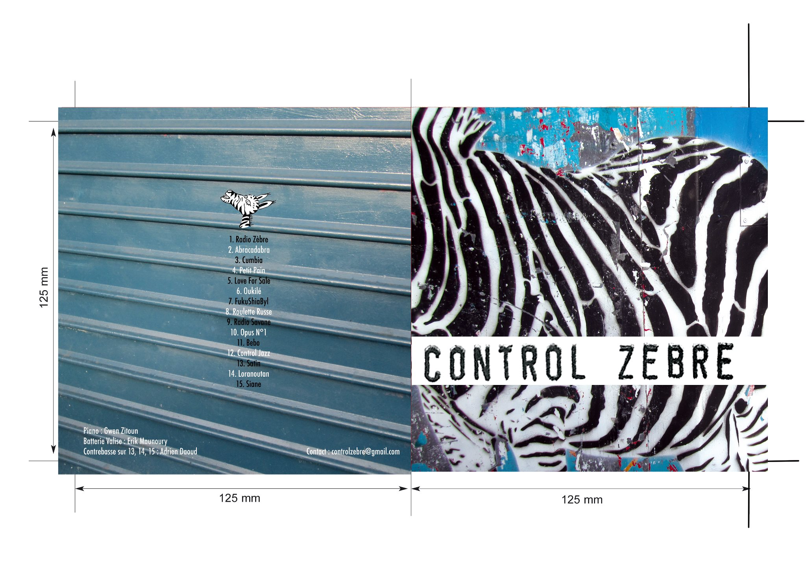

Duo · Latino Stride Swing
Formé de deux drôles de zèbres proposant des compositions originales et réunissant subtilement des ingrédients aussi variés que les Cumbias colombiennes ou les Sirbas roumaines, ce duo nourri du bon vieux swing des années 30 nous invite à chaque concert à partir en safari pour découvrir d'incroyables paysages multicolores.
Accrochez-vous bien aux oreilles de l'animal à rayures et vous repartirez de ce voyage poético-ludique avec un large sourire, et quelques coups de soleil !
Formation mobile avec piano acoustique et batterie portative originale — concerts intérieur et extérieur. 2 albums : "Radio Savane" & "Control Zèbre".
